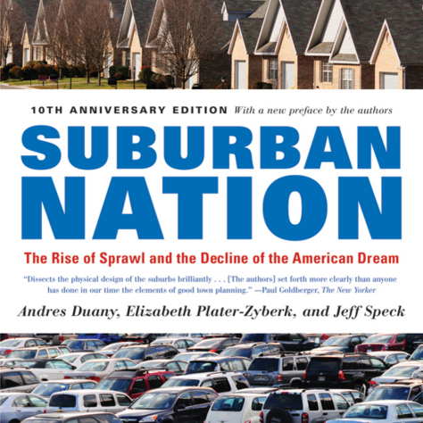

"Nothing Interests Humans More Than Other Humans"
I've been reading a wonderful book about urban planning called Suburban Nation: The Rise of Sprawl and the Decline of the American Dream.
In this politely harsh critique on the idiosyncrasies of modern attitudes towards city building and the backwards promises of suburbia, Andres Duany and his team write one sentence in particular that could easily sum up the main problem with suburban living:
"Nothing interests humans more than other humans."
Cookie-cutter homes, sometimes all built exactly alike, placed along winding community roads that don't really lead anywhere. These communities promise high standards of living sometimes afforded by 24-hour security personnel, reliable maintenance staff paid for by money-hungry homeowner's associations, and most importantly, a peace of mind that only a staid arrangement of homes, homes and more homes could offer.
But the negatives in these communities outweigh the positives. I see this happen even in a highly populated city like Miami, whose outlying suburbs (Kendall, Miami Lakes, Cutler Bay) cause traffic jams daily as commuters travel increasingly longer distances than they should to get back home from their jobs in the city.
Traffic is only part of the problem, though. The very idea of people jumping into their cars, tuning out the world until they enter the safety of their gated home within their gated community, is one that's tearing us apart as a society.
What do you think about living in suburbia versus living in the city? Let's talk!